Seleccion Campeona del Mundo
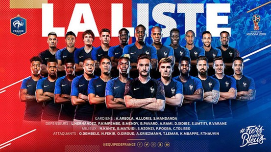
Poster oficial del Mundial de Rusia 2018
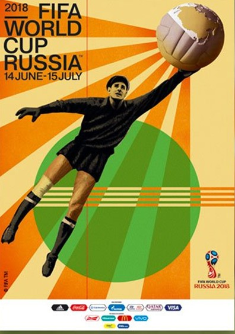
Trofeo del Mundial de Rusia 2018
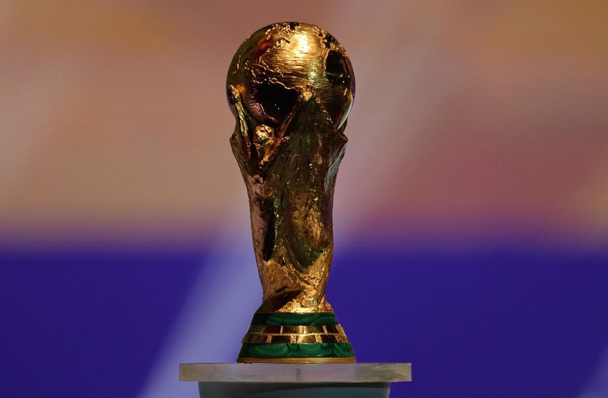
Album de cromos del Mundial de Rusia 2018

Balon oficial del Mundial de Rusia 2018
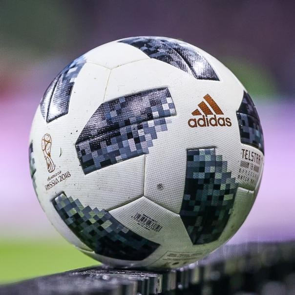
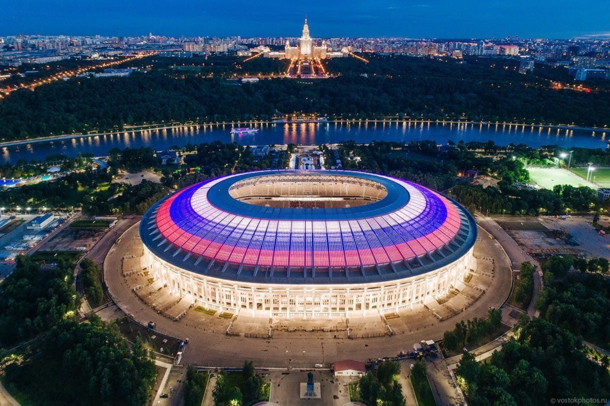
Seleccion Campeona del Mundo

Poster oficial del Mundial de Rusia 2018

Trofeo del Mundial de Rusia 2018

Album de cromos del Mundial de Rusia 2018
Balon oficial del Mundial de Rusia 2018

Participantes
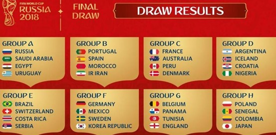
Estadisticas del Mundial de Rusia 2018
Estadios del Mundial de Rusia 2018

Luzhniki Stadium
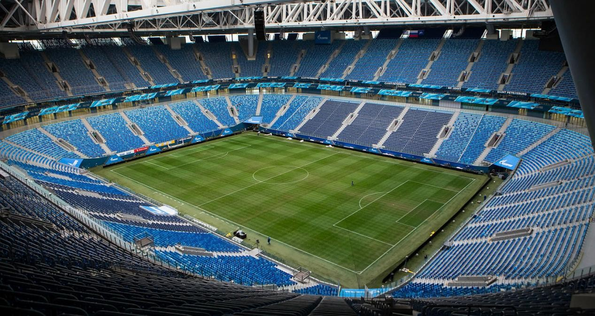
Saint Petersburg Stadium
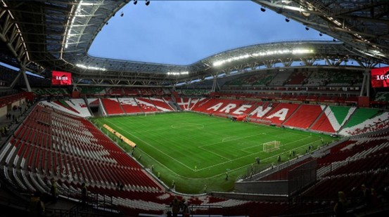
Kazan Arena
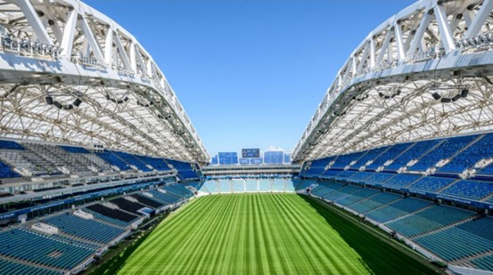
Fisht Stadium
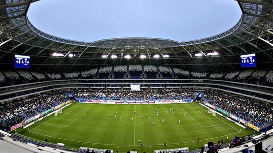
Samara Arena
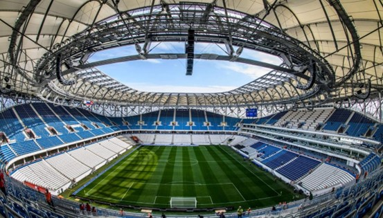
Volgograd Arena
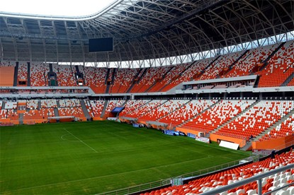
Mordovia Arena
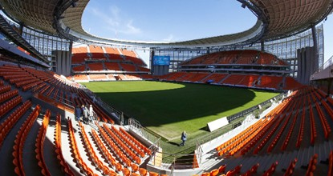
Central Stadium
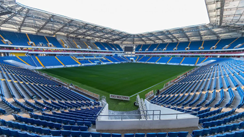
Rostov Arena
Semifinales del Mundial de Rusia 2018
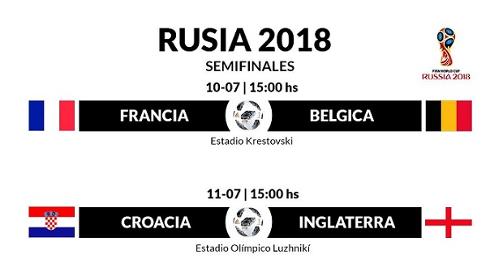
Final del Mundial de Rusia 2018
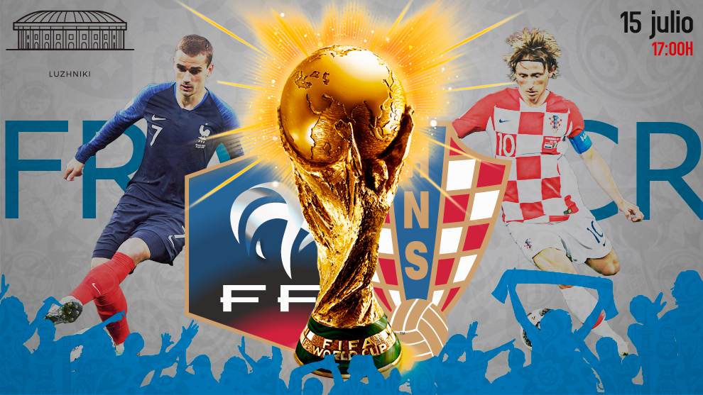
Canción oficial del Mundial de Rusia 2018
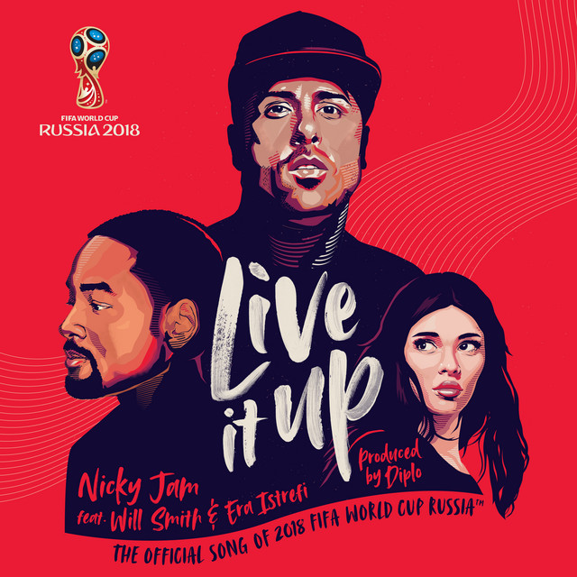
Mascota del Mundial de Rusia 2018
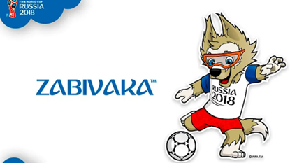
Goleadores del Mundial de Rusia 2018
| Fecha | Fase | Partido | Resultado | Estadio |
|---|---|---|---|---|
| 14/06/2018 | Grupo A | Rusia vs Arabia Saudita | 5-0 | Estadio Luzhniki (Moscú) |
| 30/06/2018 | Octavos | Francia vs Argentina | 4-3 | Kazan Arena |
| 06/07/2018 | Cuartos | Francia vs Uruguay | 2-0 | Estadio de Nizhni Nóvgorod |
| 10/07/2018 | Semifinal | Francia vs Bélgica | 1-0 | Estadio San Petersburgo |
| 11/07/2018 | Semifinal | Croacia vs Inglaterra | 2-1 (prórroga) | Estadio Luzhniki (Moscú) |
| 14/07/2018 | Tercer Lugar | Bélgica vs Inglaterra | 2-0 | Estadio San Petersburgo |
| 15/07/2018 | Final | Francia vs Croacia | 4-2 | Estadio Luzhniki (Moscú) |
| Concepto | Dato |
|---|---|
| Campeón | 🇫🇷 Francia |
| Subcampeón | 🇭🇷 Croacia |
| Tercer Lugar | 🇧🇪 Bélgica |
| Cuarto Lugar | Inglaterra |
| Partidos jugados | 64 |
| Goles totales | 169 |
| Promedio de goles por partido | 2.64 |
| Asistencia total | 3.031.768 espectadores |
| Máximo Goleador | Harry Kane (Inglaterra) - 6 goles |
| Selecciones participantes | 32 |
| Sede | Rusia |
| Nota Histórica | Segundo título de Francia • Croacia llega a su primera final |